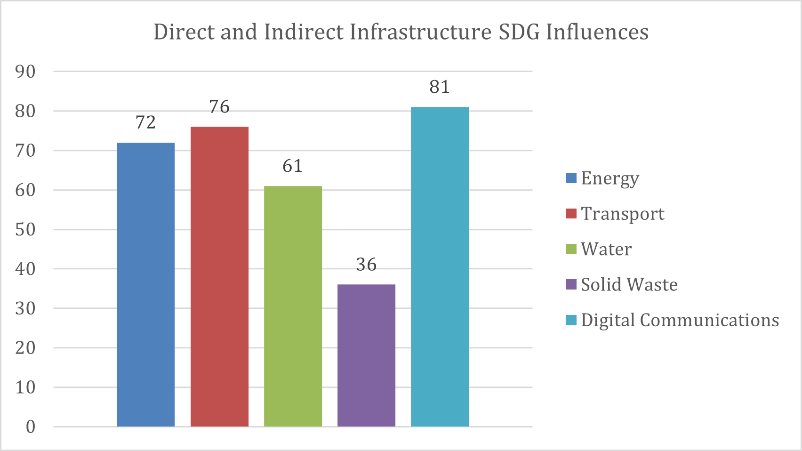
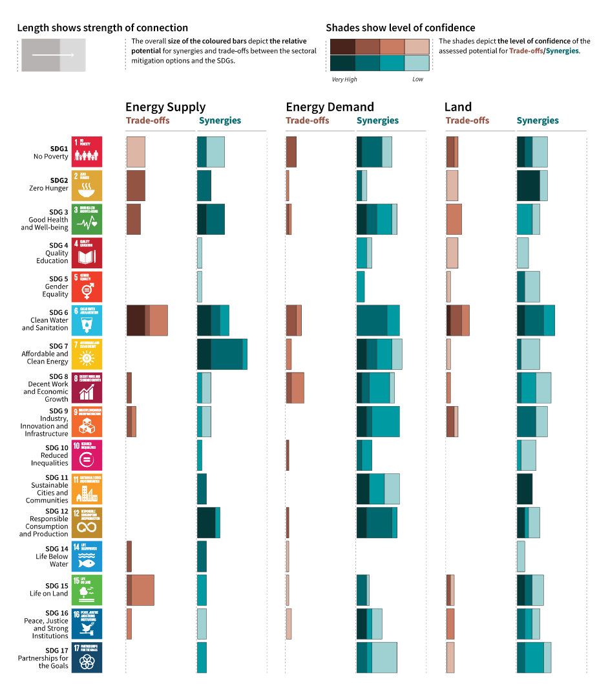
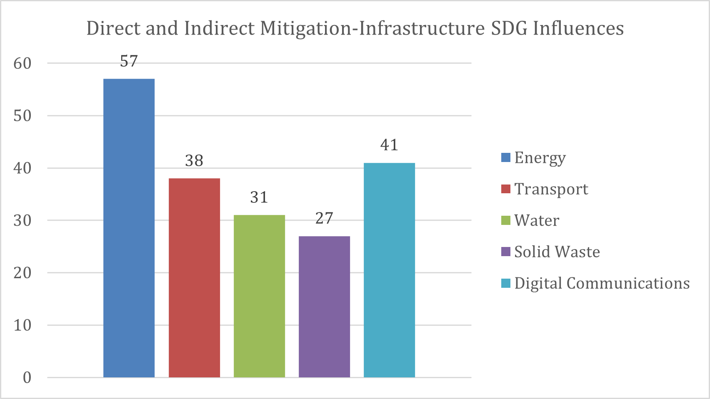
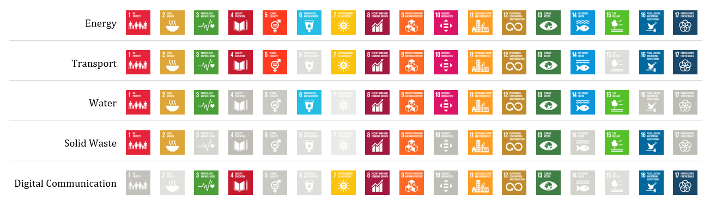

Mini-lecture 2.3 provides an overview of infrastructure and mitigation action’s potential co-benefits using the United Nation’s Sustainable Development Goal (SDG) framework. Through the methodologies presented, the lecture highlights key infrastructure sectors for mitigation action and far-reaching cross-sectoral sustainable development.
Using the first steps of the Nationally Determined Contribution (NDC) target development approach from mini-lecture 2.2, we can recognise the following trends:
Step 1 - Assess national infrastructure development priorities: Globally there is a presence of ageing infrastructure and rapid population growth that necessitates increased infrastructure services (Thacker et al. 2019).
Step 2 - Estimate their mitigation potential: Globally the infrastructure sector accounts for approximately 75% of greenhouse gas emissions. Mitigation potential is vast.
Step 3 - Evaluate resiliency and adaptation needs: Given the present and impending impacts of climate change, countries, particularly the vulnerable developing countries and small island developing states, urgently need to build resilience into infrastructure systems. Critical services such as energy generation, water and wastewater treatment, and digital communications need to be adapted to the changing climate to ensure their continued use and prevent further negative impacts.
Step 4 - Assess implementation capability: The implementation costs of traditionally extensive and technology-intensive infrastructure system components are typically high and require specific technical expertise over their design, construction, commissioning, and maintenance periods.
Given this overarching knowledge there is a need to assess, as directed by Steps 5 and 6, the cross-sectoral sustainable development benefits of mitigation action within the infrastructure sector. The Sustainable Development Goal (SDG) framework provides a comprehensive representation of society’s developmental needs (United Nations 2015). It can therefore be used to assess the interactions between infrastructure development, mitigation action, and sustainable development. Points of intersection present opportunities to utilise limited resources to reach multiple objectives simultaneously (Northrop et al. 2016).
The widely accepted SDG framework was developed after the end of tenure of the Millennium Development Goals (MDGs). The MDGs and other development work at the time, were critiqued for their disjointed approach. For instance, the MDGs were particularly criticised for enabling economic growth at the expense of environmental well-being. The SDGs were therefore intentionally designed as an interlinked network of 17 goals which cover vital economic, environmental, and social development needs common to countries across the world (Le Blanc 2015). The 17 goals consist of 169 targets which focus and guide implementation action.
Figure 2.3.1: 17 Sustainable Development Goals (United Nations 2021)
Infrastructure development has the potential to contribute significantly to sustainable development. Research undertaken to quantify the potential influence of infrastructure on the SDGs has shown that infrastructure development can positively influence all 17 goals and 72% of their targets either directly or indirectly (Thacker et al. 2019). Infrastructure development was found to influence all the targets in SDG 3 (good health and well-being), SDG 6 (clean water and sanitation), SDG 7 (affordable and clean energy), SDG 9 (industry, innovation, and infrastructure), and SDG 11 (sustainable cities and communities).
Each networked infrastructure system directly and indirectly influences a varying number of SDG targets, as shown in Figures 2.3.2. The results suggest that infrastructure development in digital communications has the most potential for far-reaching sustainable development impact. Thacker et al. (2019) attributes the digital communication system’s high rating to the increasing need of digital communication to support a wide range of services such as hazard early warning systems, electricity smart metering, efficient transportation systems, and education. The transportation and energy systems also display large direct and indirect influence on sustainable development, as they facilitate access and functionality across all sectors.
These results pinpoint sectors most influenced by infrastructure development and illuminate key development entry points that can initiate extensive impact.

Figure 2.3.2: Number of direct and indirect infrastructure SDG influences (Thacker et al. 2019)
Similar research has been conducted on mapping mitigation with the SDGs. Fuso Nerini et al. (2019) revealed that climate action, including both mitigation and adaptation, has the potential to influence all the SDGs through approximately 80% of the targets.
Focusing on mitigation, IPCC et al. (2018) evaluated the interaction between mitigation action in energy supply, energy demand, land management, and the ocean and the SDGs (see Figure 2.3.3). The research uncovered strong synergies with SDG 3 (good health and well-being), SDG 7 (affordable and clean energy), SDG 11 (sustainable cities and communities), SDG 12 (responsible consumption and production), and SDG 14 (life below water). Additionally, mitigation action in low energy demand, low material consumption, and low greenhouse gas-intensive food consumption was found to have the most SDG synergies (IPCC et al. 2018).

Figure 2.3.3: Synergies and tradeoffs between the SDGs and energy supply, energy demand, and land management (IPCC et al. 2018)
Similar to the research on infrastructure’s SDG influence, these studies illustrate the sustainable development impact of well-planned mitigation action (Vital 2020).
Evaluating the overlap between infrastructure and mitigation SDG influence extracts the potential sustainable impact of mitigation action within the infrastructure sector. Vital (2019) pursued this aim and found that mitigation action within networked infrastructure systems influences all 17 SDGs through 50% of the targets. Based on the number of targets, the energy, digital communication, and transportation systems were the top performers (see Figure 2.3.4).

Figure 2.3.4: Direct and indirect SDG influences from mitigation action within infrastructure systems (Vital 2019)
Further, Figure 2.3.5 shows the broader SDGs influenced by each infrastructure system. The results reveal an additional layer and illustrate, for example through the digital communication system, that infrastructure systems may influence a large number of SDG targets but not all the SDGs themselves. In these instances, influence is concentrated in a few SDGs rather than spread across the 17 goals.
These results demonstrate how a well-planned mitigation within an infrastructure system can positively impact multiple SDGs. For example, increased renewable energy generation in impoverished regions (meeting SDG 7) would provide affordable energy access (improving SDGs 1 and 9), increase residents’ work and academic productivity via electricity (enhancing SDGs 8 and 4), and replace the need for fuel collection and burning often done by women (contributing to SDGs 3 and 5). This illustrates the far-reaching sustainable development co-benefits of mitigation action in the infrastructure sector (Vital 2019).

Figure 2.3.5: SDGs influenced by each networked infrastructure system. Those not influenced are depicted in greyscale. (Vital 2019)
This mini-lecture provided insight into evaluating the sustainable development impact of mitigation actions within networked infrastructure systems. The lecture highlighted which systems would lead to the most mitigation co-benefits using the SDG framework. Going more in-depth into, and applying the methodologies described to a particular context, will bring critical development pathways to life. The next mini-lecture addresses how this can practically be achieved via a case study in St. Lucia.